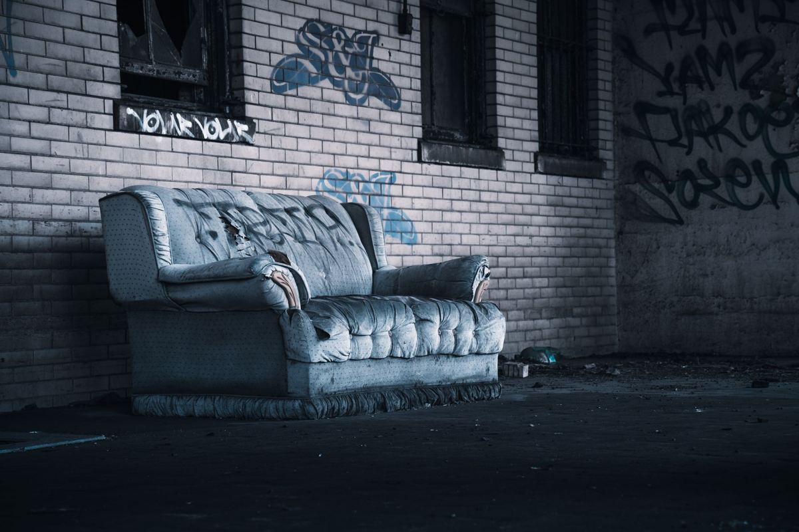

A city crew usually drives past a bulky pile for one of four reasons. Something in it is on the excluded list, it went out outside the set-out window, it is over the per-collection limit, or it is sitting in the wrong place. Crews do not sort a pile at the curb. They take the pile or they leave it.

This post is about the non-brush side of that problem. If your pile is limbs, trimmings or bagged yard waste, our post on brush piles and tree limbs the city will not collect already covers those rules in detail. What follows is everything else: the furniture, the appliance, the mattress, the remodel debris, the pile that is mostly household.
The four reasons a crew drives past
The most common one, by a distance, is that a single item took the whole pile out. A city crew is not going to separate the legal half of your pile from the illegal half, so a paint can sitting on top of a sofa means the sofa stays too. It is also the easiest one to fix, because you only have to move the paint can.
The second is timing. Most programs have a day and a time, and missing either one costs you a full cycle. Plano's bulky waste collection page sets out when material has to be at the curb and how often the service runs, and Frisco runs a separate bulk trash pickup schedule with its own rules. Setting a pile out early on the wrong week does not get it collected early. It just leaves it there longer.
The third is volume. Programs cap what one household can put out per collection, and a living room set plus a mattress and a box spring is often more than one pickup will carry.
The fourth is placement, and this one catches people who did everything else right. Behind the fence, in the alley when collection runs at the curb, or with a car parked in front of it. If a crew cannot reach the pile from the truck, the pile does not move.
What the city will not take, no matter when you set it out
This is the list worth reading before you drag anything out. Plano publishes its accepted and excluded bulky items plainly, and most northern suburbs draw the line in roughly the same place.
Household chemicals are always out. Paint, thinner, stain, motor oil, pool chemicals, pesticide, gas cans and propane cylinders belong at a household chemical collection site, not at the curb. Plano runs a household chemical collection program for exactly this, and every city in the area has some version of it. We do not take these either, and we will tell you that on the phone rather than in your driveway.
Tires are normally out. So is anything with a fuel tank still in it, and anything with refrigerant that has not been handled properly.
Construction and remodel debris is the one that surprises people. If a contractor generated it, most programs treat it as the contractor's material rather than household waste, and it is not eligible for residential collection at all. That is a different lane, and our construction debris page covers how that work runs.
Before you drag a pile to the curb, check your own city's list first. Ten minutes reading the accepted items page beats a week of the pile sitting there. If the list says no and you need it gone, that is when to call somebody.
The appliance and the mattress, specifically
These two show up in almost every skipped pile, and they each have their own problem.
An appliance with a sealed refrigerant system, which is any fridge, freezer, window unit or dehumidifier, has rules attached to it. Some programs take them on a separate appointment, some want the doors removed, and some will not touch them at all. When the city route does not work, we handle it directly, and in Plano that is an appliance pickup in Plano job.
Mattresses are the other one. They are bulky, they are frequently over the per-collection limit when the box spring comes out with them, and there is no mattress recycling program in Texas that a homeowner can just drop one at. We wrote about that in our mattress disposal post. If you are in Frisco, the local detail is on our page for getting a mattress hauled off in Frisco.
What we take off a skipped pile
Almost all of it. Furniture, mattresses and box springs, appliances, carpet and pad, fencing, lumber, cabinets, exercise equipment, patio sets, grills with the cylinder removed, toys, boxes, bags and the general mixed pile that a curb collects over a weekend.
What we still will not take is the same short list the city refuses: household chemicals, asbestos, and anything hazardous. Those materials have a legal disposal route and a curb is not part of it, which is why nobody with a truck will load them.
The rest of what we haul on a general job is on our yard debris and cleanup page, and the city-by-city detail for Frisco specifically is on our junk removal in Frisco page.
When it is worth waiting for the next city pickup
Sometimes it is, and we would rather say so.
If the pile is small, legal under your city's list, and nothing is happening at the house in the next few weeks, wait for the next collection. It costs you nothing and it is the right call. We would rather tell you the truth and lose a small job than take money you did not have to spend.
Waiting stops making sense when there is a date attached. A closing, a move-out, a listing photo appointment, an HOA letter with a deadline on it, or a contractor who needs the driveway. Then the city's calendar is not yours anymore.
The other case is a pile that will never be eligible. If it is remodel debris or it is full of things on the excluded list, no amount of waiting fixes it.
How the job runs
Send a photo of the pile. That is genuinely the fastest way, because a picture of a curb tells us more than a description does.
A crew looks at what is there and gives you a firm number before anything is lifted. The quote is the bill, and disposal is included in it. Usable furniture goes to local donation partners, metal goes to a recycler, and the rest goes out as waste.
Call before noon and the same afternoon is typical across the northern suburbs. After noon, the next morning's first slot is the normal worst case. When you are ready, tell us what is at the curb.
Frequently asked questions
Why did the truck take my neighbor's pile and not mine?
Usually one item. A paint can, a tire, or a piece of remodel debris in the pile takes the whole pile out of the program, and crews do not separate it at the curb.
Can I just put it back out next month?
You can, if everything in it is on your city's accepted list and you are under the per-collection limit. If it was excluded material the first time, it will be excluded the next time too.
Do you take the paint cans and the old gas can?
No. Those go to your city's household chemical collection program, and we will point you at the right page for your city. We take everything else on the pile.
Is remodel debris really not allowed?
In most local programs, material a contractor generated is treated as the contractor's to remove rather than household bulky waste. Check your own city's page, because the wording varies.
How fast can you get here?
Call before noon and the same afternoon is typical across Plano, Frisco, McKinney and Allen. It depends on the day and where the crew already is, so it is not something we guarantee.
A pile at the curb that nobody is coming back for is its own kind of problem, and it does not get smaller. The rest of what we haul is on the services page.